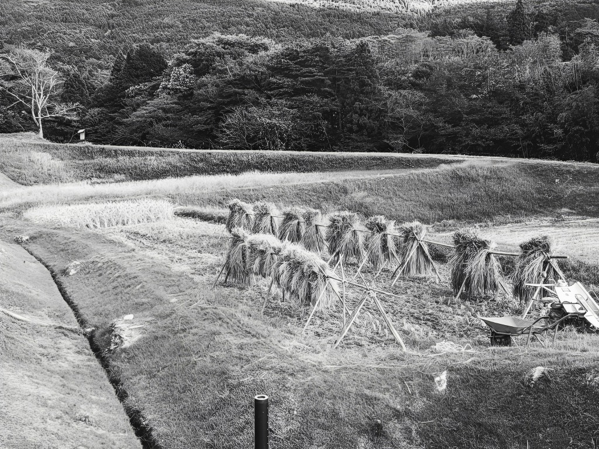
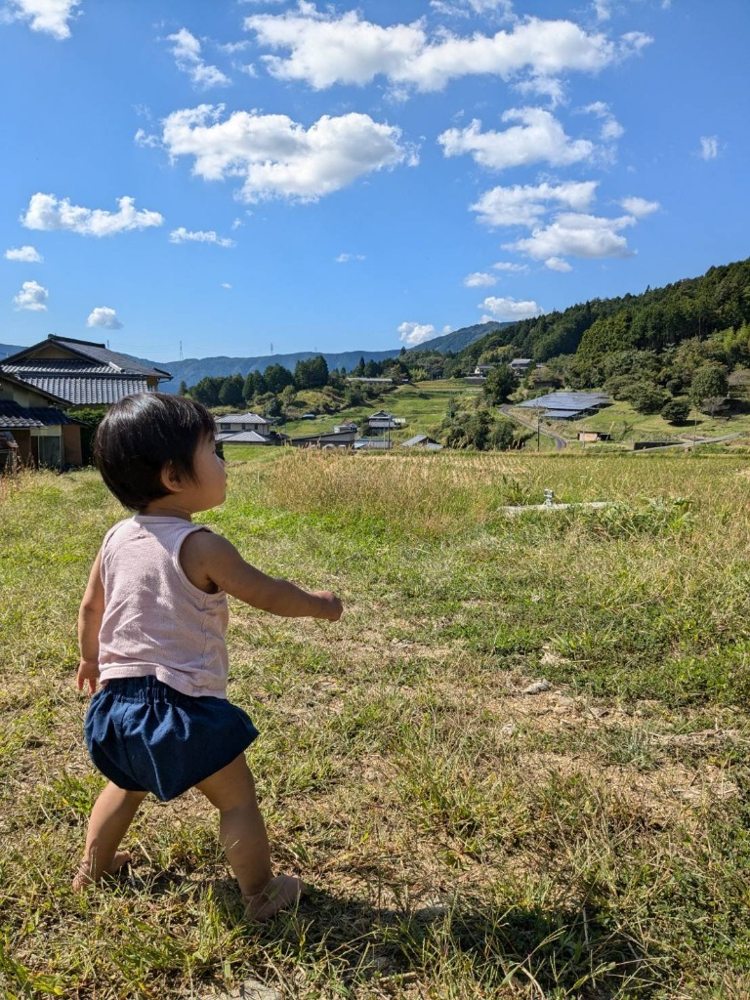
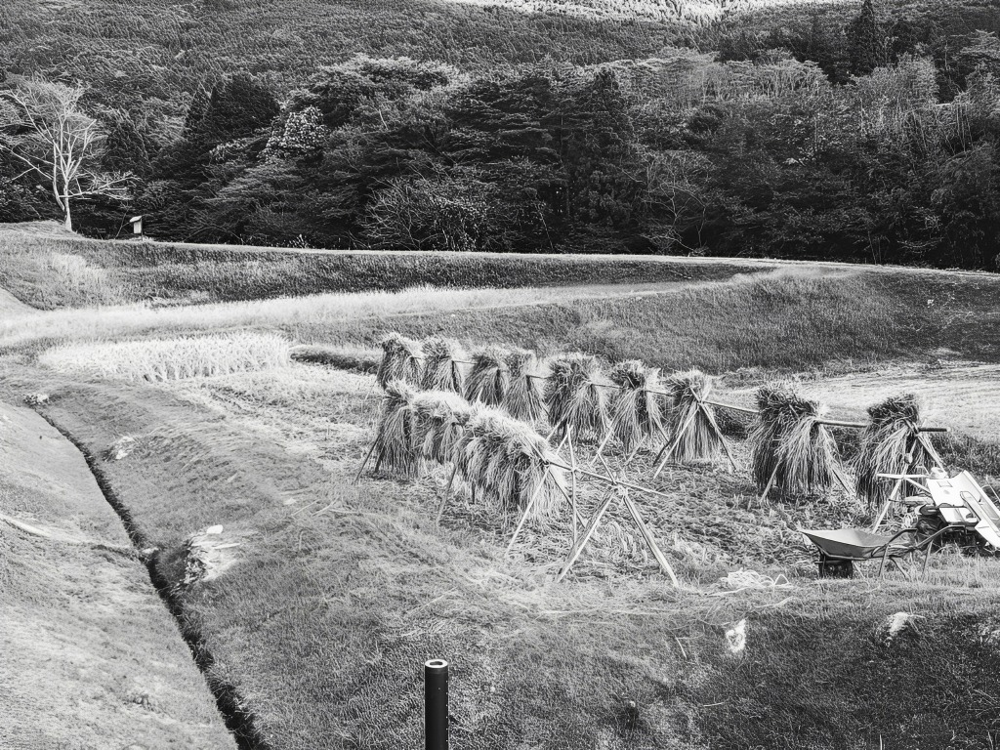
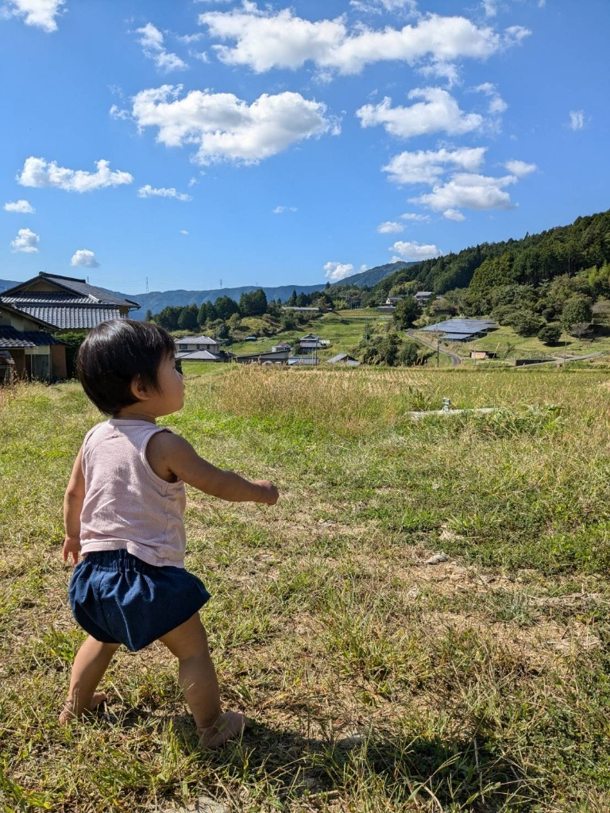
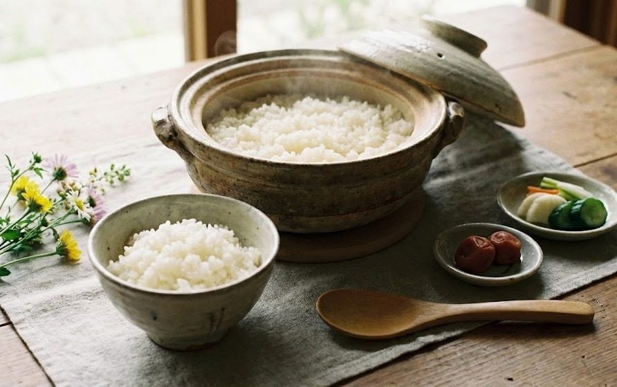
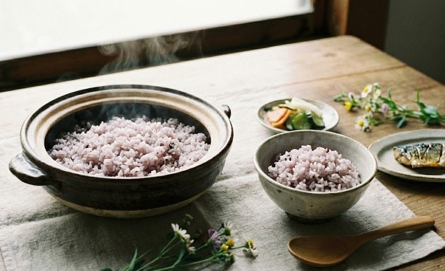
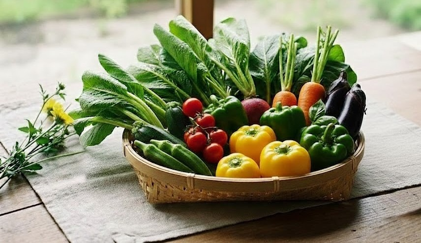
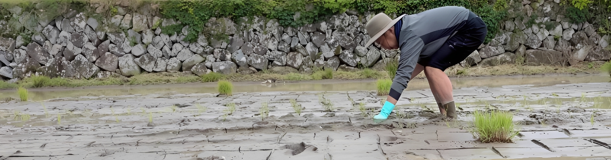

2026.04.15
SCROLL
CONCEPT
自然の恵み。そのまま。恵那から。

 



私たちが作りたいのは、
特別な日のための米ではなく、
暮らしの中で、静かに寄り添うごはんです。
強い味ではなく、深い味。
派手さではなく、続くおいしさ。
水や土だけではなく、
この土地で過ごす時間そのものが、
米の一粒に宿ると信じています。
だから今日も、
家族に出せる一杯のために、
この山で米を作っています。
PRODUCT
大地からの贈りもの



ABOUT
米に良い氣を込めて

「自分の子どもに、胸を張って食べさせられるものを作りたい」
それが、米良氣農園を始めた理由です。
私はもともと農家ではありません。
移住して、試行錯誤しながら米作りを始めました。
分からないことだらけで、
失敗も沢山しています。
それでも、
家族が毎日食べるごはんだけは、
ごまかさずに作りたい。
その思いで、田んぼに向き合っています。
農園日誌
2026.03.20
土壌の準備について
2026.02.10
味噌作りWS開催
RECIPE
※現在準備中です
FAQ
※現在準備中です
Location
Gifu, Ena, Nakanoho
Farmer
Meraki Farm
Philosophy
Nature Farming
米良氣